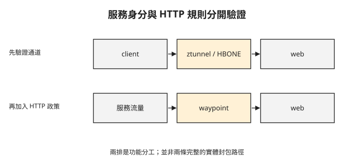

Day 2：從連得上，進一步驗證服務身分與連線限制¶

入口已經可以服務外部請求，但內部的 client 呼叫 web 仍只知道「回了 200」。團隊還想知道：連線兩端分別是哪個工作負載？流量突然增加時，代理能否限制送往 web 的連線？這章會分別讀取身分紀錄與拒絕訊號，判斷這兩個要求是否成立。
讓既有 Pod 加入 ambient¶
ambient 是 Istio 將代理與應用 Pod 分開部署的模式。每個節點的 ztunnel 負責帶有工作負載身分的加密通道；它不會替應用解析所有 HTTP 規則。前章已介紹的 mTLS，會在這裡驗證連線雙方的憑證。
本章沿用 Day 1 的 Cilium 1.20.0 與 mesh-demo/web，使用 Istio 1.30.3。開始前需有相應版本的 istioctl，並確認 Cilium 設為 cni.exclusive=false、socketLB.hostNamespaceOnly=true，以及這組環境使用的 iptables masquerade。這些是已驗證的共存設定，不能只把兩套元件裝上去就假定流量導引正確。
以下安裝 ambient 元件。輸出分別列出控制平面、CNI 與 ztunnel：
$ istioctl install --set profile=ambient -y
✔ Istio core installed
✔ CNI installed
✔ Istiod installed
✔ Ztunnel installed
Istio CNI 負責準備 ambient 所需的流量導引，原有 Cilium 仍提供 Pod 網路。兩個 DaemonSet 在驗證環境都正常執行：
這個狀態只證明元件已啟動；下一步必須發出應用請求，才能確認工作負載真的加入 mesh。
先準備具有獨立 ServiceAccount 的 client。ServiceAccount 是 Kubernetes 提供給工作負載使用的帳號，Istio 會用它識別工作負載。以下設定先建立名為 client 的帳號，再以 serviceAccountName: client 指定 Pod 使用它；稍後的身分紀錄也會包含這個帳號名稱。
apiVersion: v1
kind: ServiceAccount
metadata:
name: client
namespace: mesh-demo
---
apiVersion: apps/v1
kind: Deployment
metadata:
name: client
namespace: mesh-demo
labels:
app: client
spec:
replicas: 1
selector:
matchLabels:
app: client
template:
metadata:
labels:
app: client
spec:
serviceAccountName: client
containers:
- name: curl
image: curlimages/curl:8.11.1
command: ["sleep", "infinity"]
resources:
requests:
cpu: 10m
memory: 16Mi
將上方 YAML 存為 10-client.yaml，再建立 client、等待 client 就緒（Day 1 的 web 後端要先是 Running）、啟用 ambient 並發出三次請求（依官方文件補上，本課沒有實跑）：
kubectl apply -f 10-client.yaml
kubectl -n mesh-demo rollout status deployment/client --timeout=180s
kubectl label namespace mesh-demo istio.io/dataplane-mode=ambient --overwrite
for i in 1 2 3; do
kubectl -n mesh-demo exec deployment/client -c curl -- \
curl -sS --max-time 10 -o /dev/null \
-w "req${i} %{http_code}\n" \
http://web.mesh-demo.svc.cluster.local:80/
done
指令依據 Kubernetes 1.35 的 apply、rollout status、exec、label，以及 Istio 1.30 加入 ambient 的官方文件。
client 容器會保持執行，供你從容器內向 web.mesh-demo.svc.cluster.local:80 發出 HTTP 請求。接著為命名空間加上 ambient 標籤。以下第二行是三次請求結果摘要，並非可執行的 shell 指令：
$ kubectl label ns mesh-demo istio.io/dataplane-mode=ambient
$ client → web: req1 200 req2 200 req3 200
三次 200 表示請求成功，還沒有回答身分與加密問題。加入 ambient 不需要把代理注入每個應用 Pod；驗證中既有工作負載可在標籤更新後納管，但仍要檢查實際連線紀錄。
從 ztunnel 紀錄找出身分與目的地¶
SPIFFE 是工作負載身分的標準表示方式。這裡的 spiffe://cluster.local/ns/mesh-demo/sa/client 把信任網域、命名空間與 ServiceAccount 組合成身分。信任網域是這些身分所屬的信任範圍，此處以 cluster.local 表示；mesh-demo 是命名空間，client 是 ServiceAccount 名稱。這個身分不等同於 Pod IP，也不代表已授權執行所有操作。
HBONE 是 ambient 傳送服務流量使用的通道協定，使用 mTLS 保護通道。下圖把通道保護與稍後加入的 HTTP 處理分開，避免把 ztunnel 當成 HTTP 代理。

上排用於服務身分與加密，加入 waypoint 後才有下排的 HTTP 代理處理。以下是 ztunnel 的連線紀錄節錄：
src.workload="client-..." src.identity="spiffe://cluster.local/ns/mesh-demo/sa/client"
dst.addr=10.0.0.235:15008 dst.hbone_addr=10.0.0.235:80
dst.service="web.mesh-demo.svc.cluster.local"
dst.identity="spiffe://cluster.local/ns/mesh-demo/sa/default"
dst.addr 的 15008 是 HBONE 通道端點，dst.hbone_addr 的 80 是應用目的連接埠。src.identity 對應 client ServiceAccount，dst.identity 對應 web 使用的 default ServiceAccount。這些欄位要一起看；單獨看到 15008 這個連接埠，不足以證明任意流量都已加密。
這組紀錄的驗證範圍是單節點內的 ambient 通道與工作負載身分，未涵蓋跨節點傳輸。
加入 waypoint，再限制送往 web 的連線¶
waypoint 是 ambient 中處理 HTTP 流量的 Envoy 代理。本章的 HTTP 連線池限制在 waypoint 執行；ztunnel 的通道保護不會自動包含這項規則。先建立 waypoint，並把命名空間的服務加入它的處理範圍：
$ istioctl waypoint apply -n mesh-demo --enroll-namespace
✅ waypoint applied; namespace labeled istio.io/use-waypoint: waypoint
此命令使用 --enroll-namespace 完成命名空間設定。接著套用 DestinationRule，也就是針對目的服務設定流量政策的 Istio 資源。這份設定把 connection pool（連線池）上限壓低，讓超出容量的請求容易被拒絕：
apiVersion: networking.istio.io/v1
kind: DestinationRule
metadata:
name: web-cb
namespace: mesh-demo
spec:
host: web.mesh-demo.svc.cluster.local
trafficPolicy:
connectionPool:
tcp:
maxConnections: 1
http:
http1MaxPendingRequests: 1
maxRequestsPerConnection: 1
outlierDetection:
consecutive5xxErrors: 1
interval: 1s
baseEjectionTime: 30s
maxEjectionPercent: 100
maxConnections: 1 限制連線數，http1MaxPendingRequests: 1 限制等待連線的 HTTP 請求。outlierDetection 另外處理連續錯誤後的後端排除；不能把這兩種機制混成同一個上限。設定刻意偏低，只用於觀察，不是正式服務的容量建議。
套用設定後，驗證以 50 個並行請求呼叫 web，得到以下分布：
200 與 503 的數量會受連線時序影響，不應要求每次都重現 22 比 28。判斷連線池限制是否介入，還要看回應標頭。這批回應中，14 筆帶有 x-envoy-overloaded 標頭，30 筆帶有 x-envoy-decorator-operation 標頭，標頭內容如下：
x-envoy-overloaded: true 是 Envoy 容量限制介入的線索；搭配本章刻意降低的連線池設定，支持部分請求由代理拒絕的判斷。x-envoy-decorator-operation 提供代理處理的服務資訊，不能單憑它推定所有 503 都由同一項限制造成。原始紀錄中帶 overload 標頭的回應數與 503 總數不同，這裡不把所有 503 一概歸因。
想一想¶
- client 收到 200，卻找不到兩端身分與 HBONE 紀錄，可以宣布 mTLS 驗證完成嗎？
- 只部署 ztunnel、尚未部署 waypoint，就期待本章的 HTTP 連線池限制生效，漏了哪一步？
- 壓測出現 503，但沒有 overload 訊號，你還能否直接判定是連線池限制？為什麼？
小結¶
加入 ambient 後，先用 ztunnel 紀錄確認通道與雙方身分，再以 waypoint 執行 HTTP 流量政策。成功回應、加密通道與容量拒絕，各需要不同證據。這章沒有量測完整 mesh 成本，也沒有將單次 503 比例當成效能結果。Day 3 會改用 Cilium 的加密與 HTTP 政策，並區分哪些能力已驗證、哪些尚未完成。
延伸閱讀¶
想再深入，可以從這幾份開始：
- Istio ambient 概觀：ztunnel 與 waypoint 的分工。
- ambient 平台前提：Cilium 共存設定。
- Istio circuit breaking：連線池與過載觀測。
Istio 標誌為 CNCF（Linux Foundation）官方資產，此處作社群教學用途。